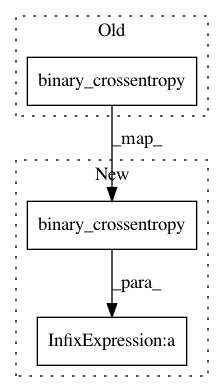

257ace722c04c1448f2e178330d51b9a11925b9f,examples/variational_autoencoder.py,,vae_loss,#Any#Any#,41
Before Change
def vae_loss(x, x_decoded_mean):
xent_loss = objectives.binary_crossentropy(x, x_decoded_mean)
kl_loss = - 0.5 * K.sum(1 + z_log_var - K.square(z_mean) - K.exp(z_log_var), axis=-1)
return xent_loss + kl_loss
vae = Model(x, x_decoded_mean)
After Change
def vae_loss(x, x_decoded_mean):
xent_loss = original_dim * objectives.binary_crossentropy(x, x_decoded_mean)
kl_loss = - 0.5 * K.sum(1 + z_log_var - K.square(z_mean) - K.exp(z_log_var), axis=-1)
return xent_loss + kl_loss
vae = Model(x, x_decoded_mean)
In pattern: SUPERPATTERN
Frequency: 3
Non-data size: 3
Instances
Project Name: keras-team/keras
Commit Name: 257ace722c04c1448f2e178330d51b9a11925b9f
Time: 2016-08-02
Author: tushuhei@gmail.com
File Name: examples/variational_autoencoder.py
Class Name:
Method Name: vae_loss
Project Name: keras-team/keras
Commit Name: 51c85dd8d637ad76857b914f0378436f807e0437
Time: 2016-09-28
Author: thomas.boquet@hec.ca
File Name: examples/variational_autoencoder_deconv.py
Class Name:
Method Name: vae_loss
Project Name: keras-team/keras
Commit Name: 59bd2476038fa59760cdc4cb9c37e181762c2f19
Time: 2016-07-24
Author: 00ruishu@gmail.com
File Name: examples/variational_autoencoder.py
Class Name:
Method Name: vae_loss